前置
人的本质是四维的——身体、头脑、心灵、精神。人类四项独特的禀赋——自觉、良知、想象力和自主意志
七个习惯概述
- 积极主动（BE PROACTIVE）
- 以终为始（BEGIN WITH THE END IN MIND）
- 所有事物都经过两次的创造——先是在脑海里酝酿，其次才是实质的创造。
- 要事第一（PUT FIRST THINGS FIRST）
- 双赢思维（THINK WIN-WIN）
- 知彼解己（SEEK FIRST TO UNDERSTAND,THEN TO BE UNDERSTOOD）
- 统合综效（SYNERGIZE，翻译成“协同”更好）
- 不断更新（SHARPEN THE SAW）
以原则为中心的思维模式。“原则”是人类与生俱来的、共识的、不辩自明的真理：
- “公平”、“公正”、“平等”
- “诚信”与“正直”
- “潜能”与“成长”
《高效能人士的七个习惯》强调以原则为中心，以品德为基础，要求“由内而外”地实现个人效能和人际效能。“由内而外”的意思是从自身做起，甚至更彻底一些，从自己的内心做起，包括自己的思维定式、品德操守和动机。
效能：
- 效：成果，鹅下的蛋
- 能：能力，下蛋的鹅
人的行为总是一再重复。因此卓越不是一时的行为，而是习惯。——亚里士多德（Aristotle）
阿波罗11号的月球之旅，让我们亲眼目睹了人类第一次在月球上行走的奇观，令人叹为观止。但前提是宇宙飞船必须先摆脱强大的地球引力，为此在刚升空时的几公里消耗的能量比之后几天几十万公里旅程消耗的能量还要多。习惯也一样有极大的引力，只是许多人不加注意或不肯承认罢了。要根除做事拖沓、缺乏耐心、吹毛求疵或自私自利这些根深蒂固的不良习性，仅有一点点毅力、只做一点点改变是不够的。“起飞”需要极大的努力，然而一旦脱离了引力的束缚，就会迎来广阔的自由天地，创造出高效能生活所必需的凝聚力和秩序。
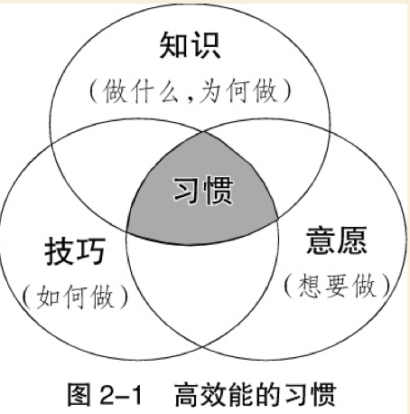
习惯一 积极主动——个人愿景的原则
选择的自由包括人类特有的四种天赋。除自我意识外，我们还拥有“想象力”，即超越当前现实而在头脑中进行创造的能力；“良知”，即明辨是非，坚持行为原则，判断思想、言行正确与否的能力；“独立意志”，即基于自我意识、不受外力影响而自行其是的能力。
弗兰克尔曾指出人生有三种主要的价值观：一是经验价值观，来自自身经历；二是创造价值观，源于个人独创；三是态度价值观，即面临困境时的回应。这三种价值观中，境界最高的是态度价值观。
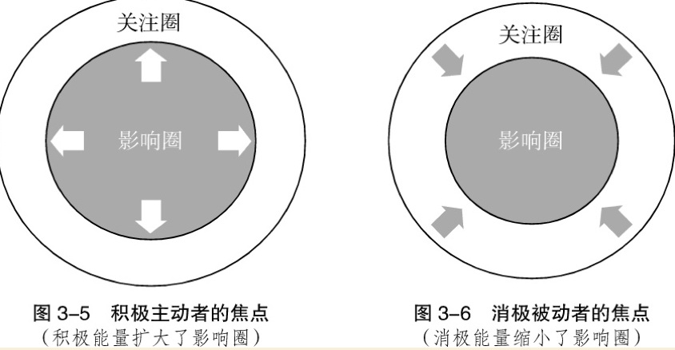
影响圈的核心就是做出承诺与信守诺言的能力。积极主动的本质和最清晰的表现就是对自己或别人有所承诺，然后从不食言。
- 敢于承诺
- 能够守诺
习惯二 以终为始——自我领导的原则
你希望在盖棺定论时获得的评价，才是你心目中真正渴望的成功！
“以终为始”的一个原则基础是“任何事都是两次创造而成”。我们做任何事都是先在头脑中构思，即智力上的或第一次的创造，然后付诸实践，即体力上的或第二次的创造。
无论你是否意识到，是否能够控制，生活的各个层面都存在第一次的创造。每个人的人生都是第二次的创造，或者是自己主动设计的，或者是外部环境、他人安排、旧有习惯限定的。自我意识、良知和想象力这些人类的独特天赋让我们能够审视各种第一次的创造，并掌控自己的那一部分，即自己撰写自己的剧本。换句话说，习惯一谈的是“你是创造者”，习惯二谈的是“第一次创造”。
“以终为始”的另一个原则基础是自我领导，但领导不同于管理。领导是第一次的创造，必须先于管理；管理是第二次的创造，具体会在习惯三中谈到。
再成功的管理也无法弥补领导的失败，而领导难就难在常常陷于管理的思维定式而难以自拔。个人生活中的领导意识则更为匮乏，很多人连自己的价值观都没有搞清楚，就忙于提高效率，制定目标或完成任务。
以终为始最有效的方法，就是撰写一份个人使命宣言（个人宪法），即人生哲学或基本信念。宣言主要说明自己想成为怎样的人（品德），成就什么样的事业（贡献和成就）及为此奠基的价值观和原则。
以我朋友罗尔夫·科尔的为例：
- 家庭第一。
- 借重宗教的力量。
- 在诚信问题上决不妥协。
- 念及相关的每一个人。
- 未听取正反双方意见，不妄下断语。
- 征求他人意见。
- 维护不在场的人。
- 诚恳但立场坚定。
- 每年掌握一种新技能。
- 今天计划明天的工作。
- 利用等待的空闲时间。
- 态度积极。
- 保持幽默感。
- 生活与工作有条不紊。
- 别怕犯错，怕的是不能吸取教训。
- 协助属下成功。
- 多请教别人。
- 专注于当前的工作，不为下一次任务或晋升瞎担心。
各种生活中心
- 以配偶为中心
- 以子女为中心
- 以家庭为中心
- 以金钱为中心
- 以工作为中心
- 以名利为中心
- 以享乐为中心
- 以敌人为中心
- 以朋友为中心
- 以自我为中心
- 以原则为中心✔️
一个人的思维定式能决定他的态度和行为，就好像“透镜”能影响一个人对世界的观察一样。生活中心不同，产生的观念也就各异。以原则为生活中心的人总是见解不凡，思想与行为也独具一格，而坚实、稳定的内在核心赐予他们的高度安全感、人生方向、智慧与力量，会让他们度过积极而充实的一生。
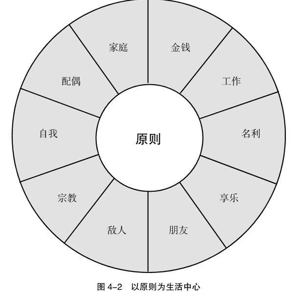
许多组织，包括家庭，都有一个最根本的问题，那就是成员并不认同集体目标。唯有参与，才有认同，这个原则值得强调再强调。一个真正反映每个成员的共同愿景和价值观的使命宣言，能调动他们的创造力和奉献精神，使他们不再需要旁人的指挥、监督和批评，因为他们已经接受了不变的核心原则，接受了企业为之奋斗的共同目标。
- 家庭宣言
- 小组宣言
- 团队宣言
- 部门宣言
ACTIONS
- 根据你目前对生活的理解，写下自己的人生角色。思考你对目前所扮演的角色和自己的生活是否满意。
- 每天抽空撰写个人使命宣言。
- 向家人或同事讲述本章的精华，并建议大家共同拟定家庭或团队的使命宣言。
习惯三 要事第一——自我管理的原则
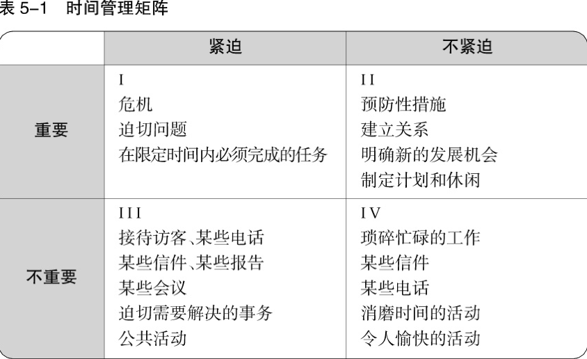
高效能人士总是避免陷入第三和第四类事务，因为不论是否紧迫，这些事情都是不重要的，他们还通过花费更多时间在第二类事务上，以期减少第一类事务的数量。
第二类事务包括建立人际关系、撰写使命宣言、规划长期目标、防患于未然等等。人人都知道这些事很重要，却因尚未迫在眉睫，反而避重就轻。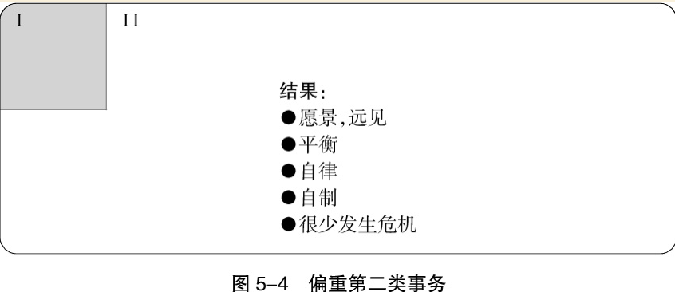
“对人不可讲效率，对事才可如此。对人应讲效用，即某一行为是否有效。”
授权是提高效能的秘诀之一，可惜一般人多吝于授权，总觉得不如靠自己更省时省事。授权基本上可以划分成两种类型：指令型授权和责任型授权。
责任型授权，要求双方就以下五个方面达成清晰、坦诚的共识，并做出承诺。
- 预期成果
- 指导方针
- 可用资源
- 任务考核
- 奖惩制度
信任是促使人进步的最大动力，因为信任能够让人们表现出自己最好的一面。但这需要时间和耐心，而且还有可能需要对人员进行必要的培训，让他们拥有符合这种信任水平的能力。
授权的大原则不变，权限却因人而异。对不够成熟的人，目标不必订得太高，指示要详尽，并且充分提供资源；监督考核则较频繁，奖惩也更直接。对成熟的人，可分配挑战性高的任务，精简指示，减少监督考核的次数，考评标准则较为抽象。
ACTIONS
- 将你认为可以授权给他人做的事情列在一张纸上，然后列出你认为可以做这些工作的人选或者通过培训可以胜任工作的人选。思考一下应该如何开始授权程序或者开展培训工作。
中场
前三个习惯着眼的是“个人领域的成功”，帮助个人从“依赖期”成长为“独立期”。具备自由、独立、自主的人格以后，方可踏实迈向“公众领域的成功”，抵达“互赖期”。（再贴此图）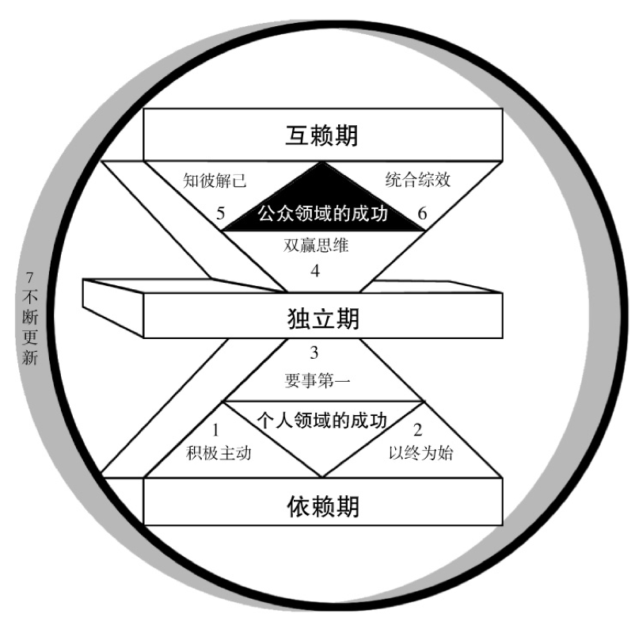
所谓情感账户，储存的是增进人际关系不可或缺的“信赖”，也就是他人与你相处时的一份“安全感”。能够增加情感账户存款的，是礼貌、诚实、仁慈与信用。
荐情感账户的六种主要的投资方式：
- 理解他人
- 黄金定律说：想要别人怎样待你，就要怎样待人。其内涵就在于，如果你希望别人了解你的实际需要，首先要了解他们每一个人的实际需要，然后据此给予帮助和支持。
- “己所欲，施于人；已所不欲，勿施于人”
- 注意小节
- 信守承若
- 明确期望
- 正直诚信
- 体现这种品格的最好方法就是避免背后攻击他人。如果能对不在场的人保持尊重，在场的人也会尊重你。当你维护不在场的人的时候，在场的人也会对你报以信任。
- 勇于道歉
- 无条件的爱
- 无条件的爱可以给人安全感与自信心，鼓励个人肯定自我，追求成长，由于不附带任何条件，没有任何牵绊，被爱者得以用自己的方式，检验人生种种美好的境界。不过，无条件的付出并不代表软弱。我们依然有原则、有限度、有是非观念，只是无损于爱心。
- 有条件的爱，往往会引起被爱者的反抗心理，为证明自己的独立，不惜为反对而反对。有条件的爱反映出爱人者不成熟的心理，表示其仍受制于对方。
最高领导阶层不和的现象在各种组织中都十分常见，纵使事业做得再大，却解决不了切身问题。可见人际关系越亲密，越是维护不易。一对一的关系是人生最基本的要素，有赖高尚的人格来维系，只有管理众人之事的技巧是不够的。
问题的反面是契机。我认为在互赖关系中，问题就代表机会——增加情感账户存款的机会。如果父母能把孩子身上出现的问题看作联络感情的机会，而不是麻烦和负担，那么两代人之间的关系就会大大改善，父母会更愿意，甚至是迫切地理解并帮助孩子。当孩子带着问题来求助时，父母不会大呼：“天啊，又怎么了！”而是想：“瞧，我又有机会帮助孩子了，我们的关系会更进一步。”于是交流成了促进感情的工具，而不是简单的敷衍。
习惯四 双赢思维——人际领导的原则
双赢者把生活看作一个合作的舞台，而不是一个角斗场。一般人看事情多非此即彼，非强即弱，非胜即败。其实世界之大，人人都有足够的立足空间，他人之得不必视为自己之失。
人际交往的六种模式：
- 利人利己（双赢）
- 两败俱伤（输/输）
- 损人利己（赢/输）
- 独善其身（赢）
- 舍己为人（输/赢）
- 好聚好散（无交易）
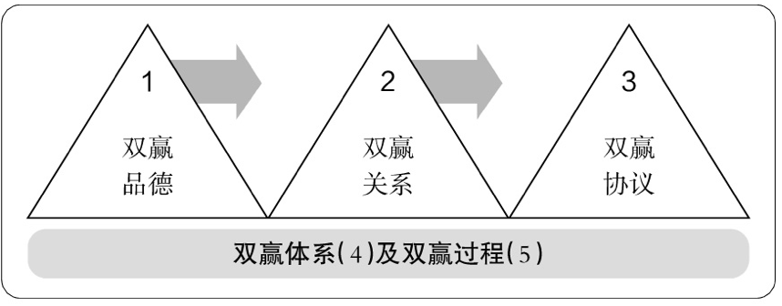
双赢思维的五个要领
- 双赢品德
- 诚信
- 成熟
- 这是敢作敢为与善解人意之间的一种平衡状态。“成熟就是在表达自己的情感和信念的同时又能体谅他人的想法和感受的能力。”
- 知足
- 公众领域成功的意思不是压倒旁人，而是通过成功的有效交往让所有参与者获利，大家一起工作，一起探讨，一起实现单枪匹马无法完成的理想，这种成功要以知足心态为基础。
- 双赢关系
- 双赢协议
- 关系确立之后，就需要有协议来说明双赢的定义和方向，这种协议有时被称为“绩效协议”或“合作协议”，它让纵向交往转为水平交往，从属关系转为合作关系，上级监督转为自我监督。
- 自我评估更能激人上进。在高度信任的文化氛围里，自我评估的结果更精确，因为当事人往往最清楚实际进度，自我洞察远比旁人的观察和测量要准确。
- 在双赢协议中（即上文中的“责任型授权”），对以下五要素应该有明确的规定：
- 预期结果：确认目标和时限，方法不计。
- 指导方针：确认实现目标的原则、方针和行为限度。
- 可用资源：包括人力、财力、技术或者组织资源。
- 任务考核：建立业绩评估标准和时间。
- 奖惩制度：根据任务考核确定奖惩的意义。
- 有四种管理者或家长都可以掌控的奖惩方法：金钱、精神、机会以及责任。
- 其中金钱奖惩包括薪资、股份、补贴的增减；
- 精神奖惩包括认同、赞赏、尊敬、信任或者相反——除非温饱没有保障，不然精神奖励的价值通常超过物质奖励；
- 机会奖惩包括培训、进修等；
- 责任奖惩一般同职务有关，比如升职或者降职。
- 双赢体系
- 双赢过程
- 我建议不同的人和机构采用以下四个步骤完成双赢过程：
- 首先，从对方的角度看问题。真正理解对方的想法、需要和顾虑，有时甚至比对方理解得更透彻。
- 其次，认清主要问题和顾虑（而非立场）。
- 再次，确定大家都能接受的结果。
- 最后，寻找实现这种结果的各种可能途径。
- 我建议不同的人和机构采用以下四个步骤完成双赢过程：
ACTIONS
- 列出你生活中最重要的三个人际关系，估算一下与这些人的情感账户余额，记下有助于增加存款的感情投资。
- 找到一个双赢模式的榜样，也就是即便身处困境也不忘双赢的人，仔细观察并向他学习。
习惯五 知彼解己——移情沟通的原则
作为聆听的最高层次，移情聆听是指以理解为目的的聆听，要求听者站在说话者的角度理解他们的思维模式和感受。移情聆听的本质不是要你赞同对方，而是要在情感和理智上充分而深入地理解对方。
移情聆听是有风险的。只有当你做好了被对方影响的准备，才能深入到移情聆听的阶段，而这是需要足够的安全感的，因为这时候的你会变得很脆弱。从某种意义上说，这很矛盾，因为在影响对方之前，你必须先被影响，即真正理解对方。
移情聆听本身就是巨额的感情投资，它能够给人提供“心理空气”，极具治疗作用。
四种“自传式”回应
- 价值判断——对旁人的意见只有接受或不接受。
- 追根究底——依自己的价值观探查别人的隐私。
- 好为人师——以自己的经验提供忠告。
- 自以为是——根据自己的行为与动机衡量别人的行为与动机。
青少年与朋友讲电话可以扯上一两小时，跟父母却无话可说，或者把家当成吃饭睡觉的旅馆，为什么呢？如果父母只知训斥与批评，孩子怎么肯向父母吐真言？请看以下一对父子的谈话，先从父亲的角度来看：
子：“上学真是无聊透了。” 父：“怎么回事？”←追根究底 子：“学的都是些不实用的东西。” 父：“我当年也有同样的想法，可是现在觉得那些知识还挺有用的，你就忍耐一下吧。”←好为人师 子：“我已经耗了10年了，难道那些Ｘ＋Ｙ能让我学会修车吗？” 父：“修车？别开玩笑了。”←价值判断 子：“我不是开玩笑，我的同学乔伊辍学之后学修车，现在月收入不少，这才有用啊。” 父：“现在或许如此，以后他后悔就来不及了。你不会喜欢修车的。好好念书，将来不怕找不到更好的工作。”←好为人师 子：“我不知道，可是乔伊现在很成功。” 父：“你已尽了全力吗？你上的可是名校，应该差不到哪儿去。”←好为人师、价值判断 子：“可是同学们都有同感。” 父：“你知不知道，把你养到这么大，你妈和我牺牲了多少？已经读到高二了，不许你半途而废。”←价值判断 子：“我知道你们牺牲很大，可是不值得。” 父：“你应该多读书，少看电视……”←好为人师、价值判断 子：“爸，唉——算了，多说也没什么用。”
这位父亲可谓用心良苦，但并未真正了解孩子的问题。让我们再听听孩子可能想表达的心声。
子：“上学真是无聊透了。”←我想引起注意，与人谈谈心事。 父：“怎么回事？”←父亲有兴趣听，这是好现象。 子：“学的都是些不实用的东西。”←我在学校有了问题，心里好烦。 父：“我当年也有同样的想法。”←哇！又提当年勇了。我可不想翻这些陈年旧账，我只关心我自己的问题。“可是现在觉得那些知识还挺有用的，你就忍耐一下吧。”←时间解决不了我的问题。 子：“我已经耗了10年的时间了，难道那些Ｘ＋Ｙ能让我学会修车吗？” 父：“修车？别开玩笑了。”←他不喜欢我当修车工，不赞成休学，我必须提出理论根据。 子：“我不是开玩笑，我的同学乔伊辍学之后学修车，现在月收入不少，这才有用啊!” 父：“现在或许如此，以后他后悔就来不及了。”←糟糕，又要开始说教。“你不会喜欢修车的。”←爸，你怎么知道我的想法？“好好念书，将来不怕找不到更好的工作。” 子：“我不知道，可是乔伊现在很成功。”←他没有念完高中，可是混得很不错。 父：“你尽全力了吗？”←又开始顾左右而言他，但愿爸能听我说。“你上的可是名校，应该差不到哪儿去。”←唉，又转个话锋，我想谈我的问题。 子：“可是同学们都有同感。”←我是有根据的，不是信口雌黄。 父：“你知不知道，把你养到这么大，你妈和我牺牲了多少？”←又是老一套，想让我感到惭愧。学校很棒，爸妈也很了不起，就只有我是个笨蛋。“已经读到高二了，不许你半途而废。” 子：“我知道你们牺牲很大，可是不值得。”←你们根本不了解我。 父：“你应该多读书，少看电视……”←问题不在这里。爸，你根本不明白，讲也讲不通，根本不该跟你谈的。 子：“爸，唉——算了，多说也没什么用。”
表达自己也是谋求双赢之道所不可缺少的，了解别人固然重要，但我们也有义务让自己被人了解，这通常需要相当的勇气。
古希腊人有一种很经典的哲学观点，即品德第一，感情第二，理性第三。品德指的是你个人的可信度，是人们对你的诚信和能力的认可，是你的情感账户。感情指的是你的移情能力，是感性的，说明你能通过交流迅速理解他人的情感。理性是你的逻辑能力，即合理表达自己的能力。
请注意这个顺序：品德、感情、理性。首先是你本身的品德，然后是你同他人的关系，最后是你表达自己的能力，这是另外一种重要的模式转换。表达自己并非自吹自擂，而是根据对他人的了解来诉说自己的意见，有时候甚至会改变初衷。因为在了解别人的过程中，你也会产生新的见解。
习惯六 统合综效——创造性合作的原则
统合综效的基本心态是：如果一位具有相当聪明才智的人跟我意见不同，那么对方的主张必定有我尚未体会的奥妙，值得加以了解。与人合作最重要的是，重视不同个体的不同心理、情绪与智能，以及个人眼中所见到的不同世界。与所见略同的人沟通，益处不大，要有分歧才有收获。
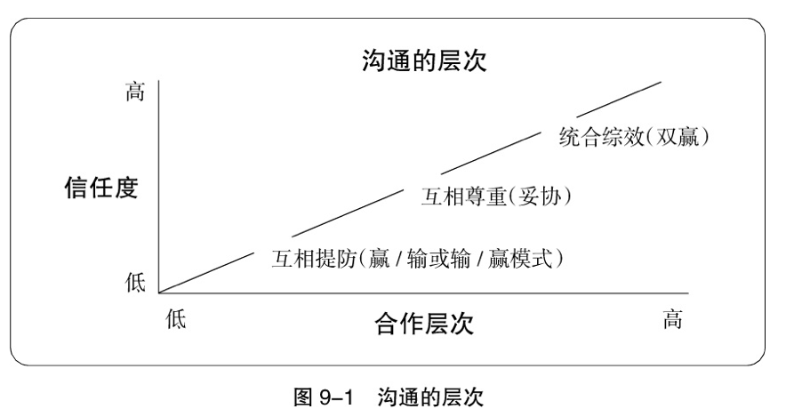
尊重人与人之间的差异，当有人不同意你的观点的时候，你应该试着寻找统合综效的第三条道路，一般情况下它总是存在的。如果你坚持双赢模式，确实愿意努力理解对方，你就能找到一种让每一个人都受益更多的解决方案。
ACTIONS
- 列一张名单，写上让你觉得不快的人的名字。如果你内心有更充足的安全感，能够做到尊重差异，你是否会觉得这些人代表了不同意见，而你可以借此实现与他们的统合综效？
- 下一次当你同某人意见相左的时候，尽量理解他的立场和顾虑，以创造性的、互惠互利的方式应对问题。
习惯七 不断更新——平衡的自我提升原则
人生最值得的投资就是磨炼自己，因为生活与服务人群都得靠自己，这是最珍贵的工具。工作本身并不能带来经济上的安全感，具备良好的思考、学习、创造与适应能力，才能立于不败之地。拥有财富，并不代表经济独立，拥有创造财富的能力才真正可靠。
习惯七就是个人产能。它保护并优化你所拥有的最重要的资产——你自己。它从四个层面更新你的天性，那就是：身体、精神、智力、社会/情感。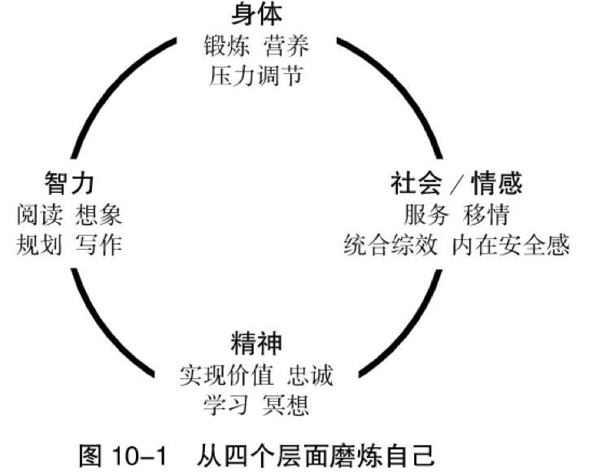
- 身体
- 很多人觉得自己没有时间锻炼身体，这种想法真是大错特错！每周只需要用3～6个小时锻炼，而这对一周当中余下162～165个小时有着巨大益处，是绝对必要的。锻炼身体不一定要有专门的器材，好的锻炼项目可以在自己家里进行，可以提升你的耐力、韧性和力量。
- 精神
- 有些人是通过欣赏优秀的文学或音乐作品来实现精神层面的更新，还有些人是通过与自然交流来达到同样目的。大自然会赐福给那些沉浸在自然中的人。当你远离城市的喧嚣与混乱，尽情享受过大自然的和谐与韵律，再回到城市时会感到耳目一新。
- 智力
- 智力层面的更新主要靠教育，借此不断学习知识，磨砺心智，开阔视野。养成定期阅读优秀文学作品的习惯是拓展思维的最佳方式，这是第二类事务，人们可以借此接触到当前或历史上最伟大的思想。我极力推荐大家从每个月读一本书开始，然后每两周读一本书，接着是每周读一本书。磨砺心智的另一种有效方式是写作。通过不断记录自己的想法、经历、深刻见解和学习心得，我们的思路就会更加明晰、准确和连贯。
- 社会、情感
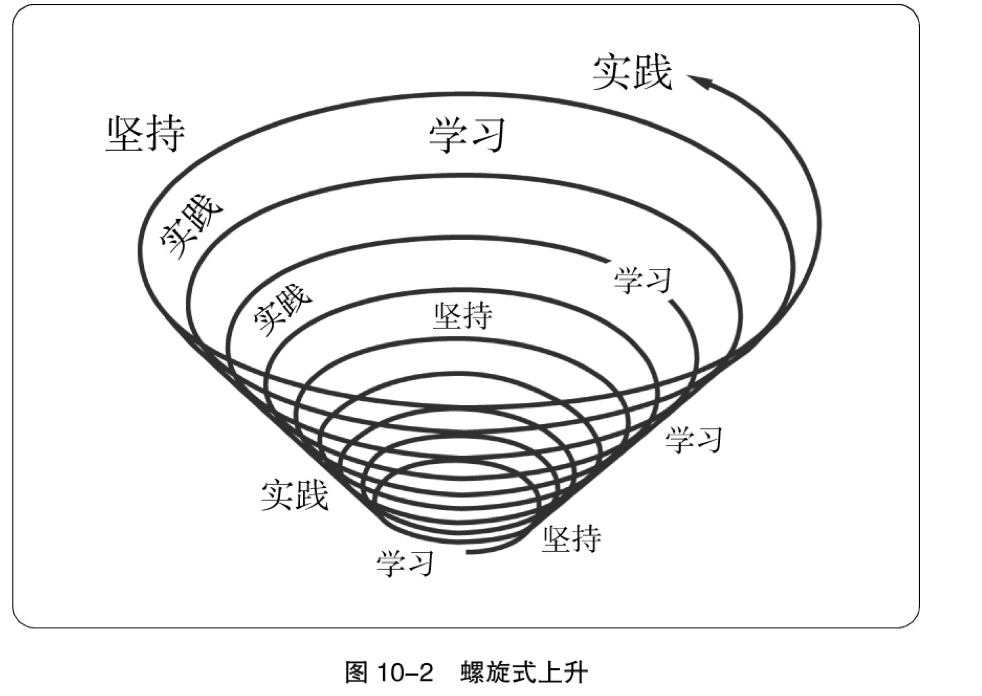
ACTIONS
- 列出让自己保持良好身体的活动清单。
- 列出让自己提升智力与精神的活动清单。
尾声
七个习惯浇灌出来的最高级、最美好和最甘甜的果实就是齐心协力，就是把自己、爱人、朋友和同事合而为一。
有人说过：“我们能赠予子孙的永存遗产只有两种——根和翅膀。”
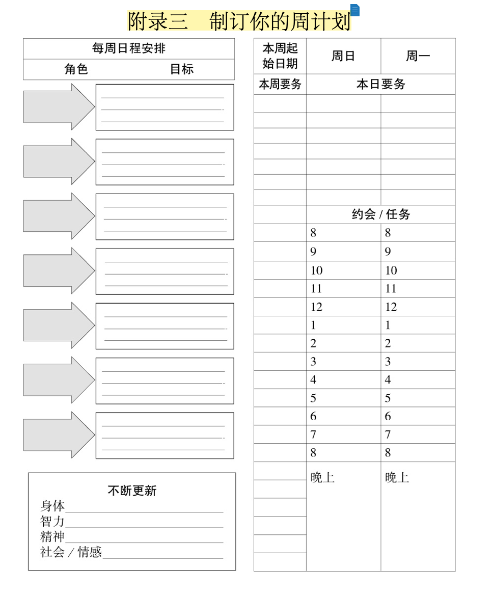